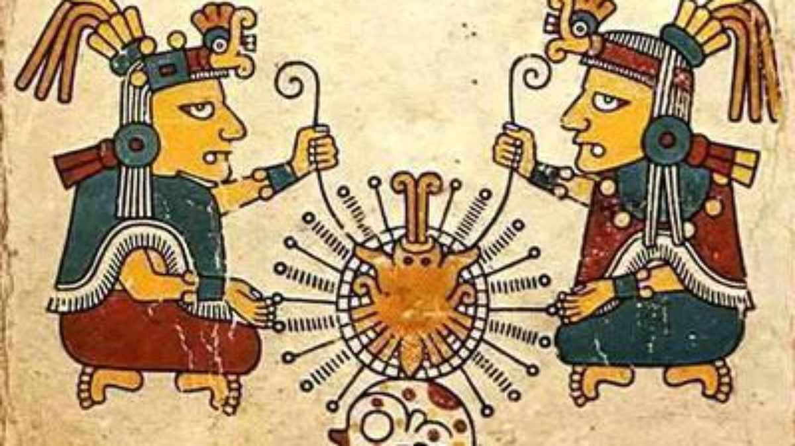

O povo asteca deu grande importância ao desenvolvimento de diversas áreas do saber. Possuíam um calendário que muito se assemelhava aos padrões utilizados na contagem feita do tempo hoje. Sua linguagem era tanto pictórica quanto hieroglífica, ou seja, utilizavam de desenhos, símbolos e sons para fabricarem transmitirem uma mensagem. O desenvolvimento da escrita entre os astecas não tinha apenas um caráter funcional, muitos poemas, cantos religiosos e peças teatrais foram registradas por seu sistema de escrita.
A medicina entre os astecas era uma tarefa desempenhada por xamãs e curandeiros. Por meio de rituais e transes diagnosticavam a doença e o tratamento contra certo incomodo físico. A fitoterapia era um método recorrente na preparação de infusões, chás e pomadas destinadas aos mais variados tratamentos médicos. Por meio do conhecimento acumulado faziam sangrias, tratavam feridas, curavam cáries e doenças visuais e auditivas. A medicina entre os astecas era uma tarefa desempenhada por xamãs e curandeiros. Por meio de rituais e transes diagnosticavam a doença e o tratamento contra certo incomodo físico. A fitoterapia era um método recorrente na preparação de infusões, chás e pomadas destinadas aos mais variados tratamentos médicos. Por meio do conhecimento acumulado faziam sangrias, tratavam feridas, curavam cáries e doenças visuais e auditivas. 